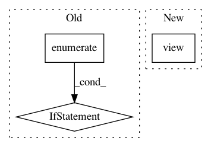

9a4dd781d84afc08579f6e77281372cf001b59a2,onmt/translate/translator.py,Translator,_fast_translate_batch,#Translator#Any#Any#,310
Before Change
if finished_count > 0 or step + 1 == self.max_length:
predictions = alive_seq.view(-1, beam_size, alive_seq.size(-1))
scores = topk_scores.view(-1, beam_size)
for i, is_finished in enumerate(finished.tolist()):
if step + 1 != self.max_length and is_finished == 0:
continue
// TODO: if we get there because of max_length, the last
// predicted token is currently discarded.
b = batch_offset[i]
results["predictions"][b].append(predictions[i, 0, 1:])
results["scores"][b].append(scores[i, 0])
After Change
end_condition = topk_ids[:, 0].eq(end_token)
if step + 1 == self.max_length:
end_condition.fill_(1)
finished = end_condition.nonzero().view(-1)
// Save result of finished sentences.
if len(finished) > 0:
predictions = alive_seq.view(-1, beam_size, alive_seq.size(-1))
In pattern: SUPERPATTERN
Frequency: 3
Non-data size: 3
Instances
Project Name: OpenNMT/OpenNMT-py
Commit Name: 9a4dd781d84afc08579f6e77281372cf001b59a2
Time: 2018-07-05
Author: guillaume.klein@systrangroup.com
File Name: onmt/translate/translator.py
Class Name: Translator
Method Name: _fast_translate_batch
Project Name: cornellius-gp/gpytorch
Commit Name: b2951813547426828d313a80c52de8a619e99731
Time: 2018-11-26
Author: gpleiss@gmail.com
File Name: gpytorch/lazy/constant_mul_lazy_tensor.py
Class Name: ConstantMulLazyTensor
Method Name: _quad_form_derivative
Project Name: BindsNET/bindsnet
Commit Name: ea09d1fd36b347bc86cbc52de8ea39ffbeb24dc1
Time: 2019-06-21
Author: hananel@hazan.org.il
File Name: examples/mnist/reservoir.py
Class Name:
Method Name: